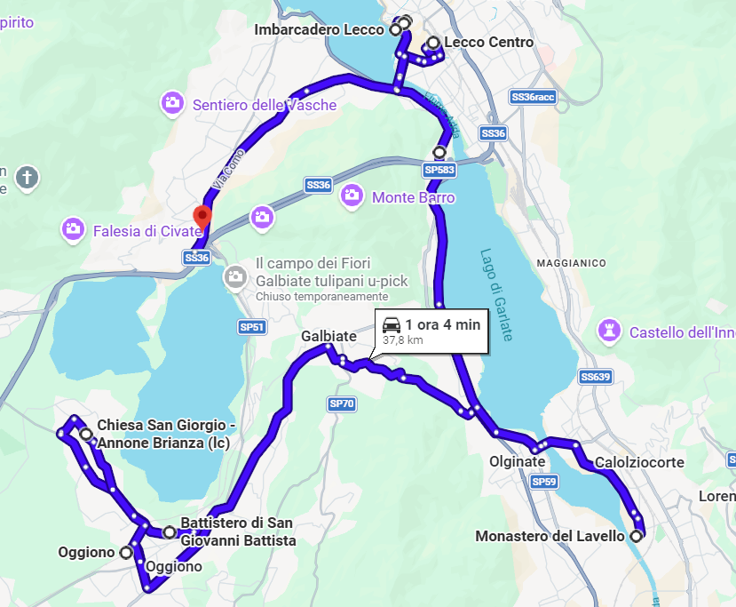
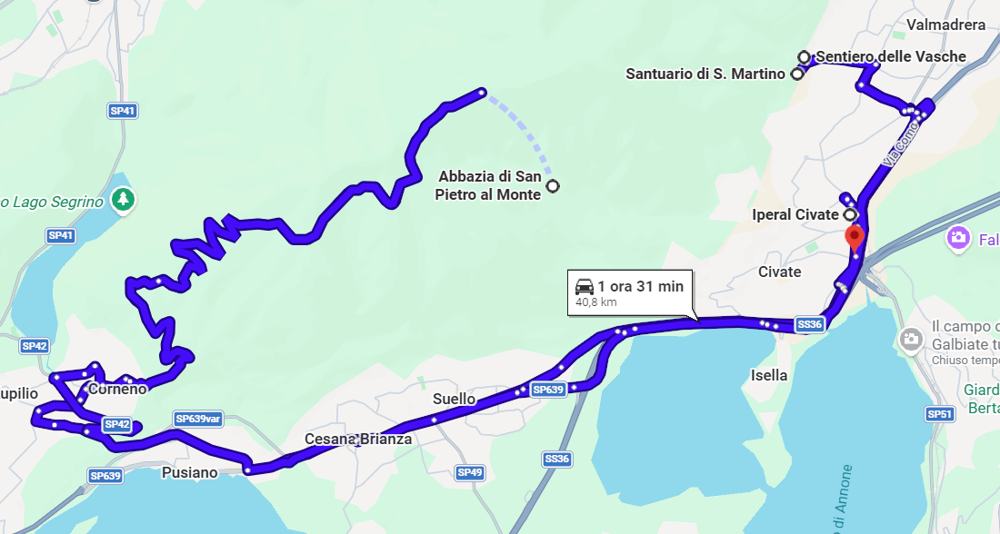
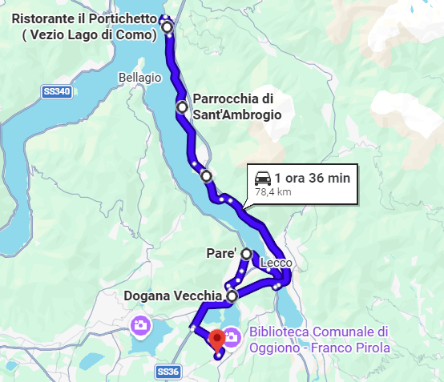

LECCOTOURS.TRAVELS
TOUR NEL ROMANICO IN PROVINCIA DI LECCO
PRIMO GIORNO

SECONDO GIORNO

TERZO GIORNO

Clicca
QUI
per scoprire qualcosa in più sulle tappe del tour!
Cosa include il tour?
PRENOTA ORA
il tuo tour!